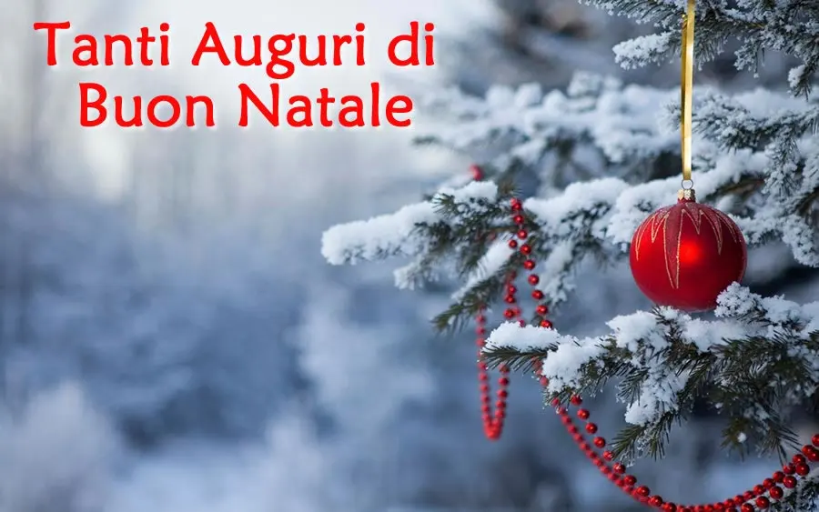

BUON NATALE TESORI
Buon pomeriggio amici miei.
So che non scrivo molto ma lo faccio anche per non annoiare.
Oggi sono qui per darvi i miei più sinceri auguri di buon Natale.
Vi auguro ogni bene e tutto ciò che desiderate.
Vi auguro che i vostri sogni si realizzino e soprattutto mi auguro che babbo natale vi abbia portato quello che desideravate Iginio
Chissà quante cose makeuppose. . Gli occhi a cuoricino mi vengono solo al pensiero. .
Io quest'anno solo una matita e una trousse di makeup ma sono contenta lo stesso.
Poi ve ne parlerò. .

Vi lascio in questo pomeriggio fatto di pace e serenità e di auguri vari con l'auspicio che non passiate questi Santi giorni da soli ma in amore e allegria. .
Vi voglio bene